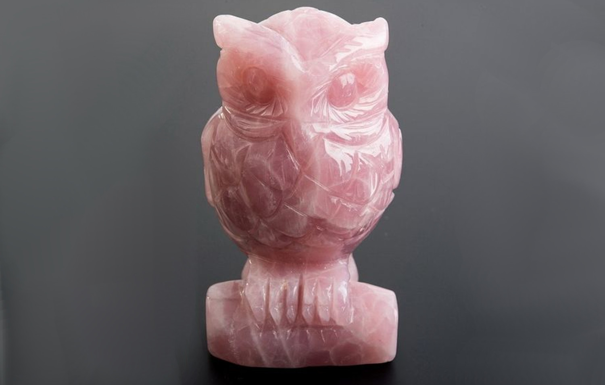
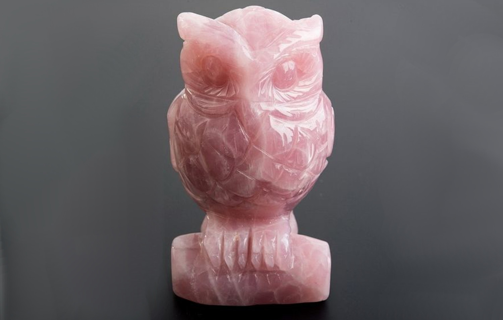

Розовый кварц
Лечебные свойства камня.
Литотерапевты считают, что изделия из этого самоцвета рекомендуется носить женщинам во время беременности.
По их мнению, этот камень является символом долголетия и здоровья, выделяемая энергетика оздоравливает тело и дух.
Благотворное влияние оказывает самоцвет на сердечно-сосудистую систему человека, рекомендуют носить людям перенесшим инфаркт.
Розовый минерал убирает напряжение с глаз, тела и убережет от излучения, не желательно использовать камень тем, у кого есть опухоль и т. п. новообразования.
Магические свойства камня.
Розовый кварц улучшает настроение и дарует спокойствие, помогает избавиться от отрицательных черт характера и укрепляет положительные черты.
Вызывает в человеке чуткость и сострадание, помогает встать на путь истинный и осознать свое истинное предназначение в жизни, оберегает от совершения ошибок и неправильных поступков.
Камень рекомендуется использовать творческим людям, он дарует им вдохновение и дает возможность реализовывать свои таланты.
Однако данный минерал также еще называют камнем иллюзий. Бывает, что из-за него человек перестает видеть мир в реальном свете.
Попав под такую иллюзию, очень сложно от нее освободиться. Поэтому эзотерики советуют «отдыхать» от этого кварца.
Нужно носить камень в течение определенного времени, после чего сделать перерыв. Спустя какой-то период розовый кварц можно снова использовать.


 
